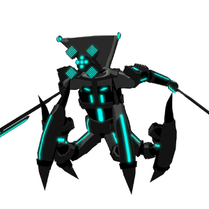

Bravera
背景

O-O1000 “Bravera” 被创造为 Opton Empire 最高效的集中处理器，存在意义纯粹是每时每刻计算成千上万项运算，并与 Opton Empire 的每台自动机完全连接。所有这些都是为了执行不可逆的最高指令：消灭 FOX Empire。作为宇宙中最强大的自动机，Commander Bravera 装备了可怖的战斗能力，但由于自动机行动极其高效，这些能力很少被展示。
他的混合动力源同时包含 Opton 能量，以及驱动他被命令消灭的 FOX Pilot 的 Rift Energy。Commander 在巨大力量与能量输出，以及纯粹、不受抑制的计算效率之间取得了完美平衡。FOX 身上大量存在的感知与良知负担不会拖累 Bravera，因此他能轻易消灭一个又一个 FOX Colony，同时主动规划数百个更多殖民地的灭绝。
策略
Bravera 战斗由 2 个阶段组成。第 1 阶段中，Bravera 会与 2 名 Opton Guard 一起生成。Opton Guard 会寻找大厅中 HP 最低的玩家，并持续骚扰他们。伤害 Bravera 并不要求杀死守卫，因此要攻击谁由队伍自行决定。
第 1 阶段中，当 Bravera 达到 50% HP 时，他会解锁 2 个新招式。现在他可以使用 Corkscrew Leap 跨越长距离，也可能用强力单次打击的 Pizza-cutter 结束突进。
第 2 阶段开始后，Bravera 会解锁新的招式组。这套招式比第一阶段敏捷得多，包含激烈近战连段和冲刺能力，使得没有队友支援时很难逃离 Bravera。第 2 阶段中，当 HP 达到 50% 时，Bravera 可以使用先前 Pizza-cutter 的强化版本，现在会打击两次，并且可在任意时刻使用。
统计
基础 HP：28000
伤害：物理和电击
该 Boss 有两个阶段。
| 属性 | 抗性 |
|---|---|
| 物理 | 中性 (1x) |
| 火焰 | 弱点 (1.25x) |
| 冰霜 | 抗性 (0.5x) |
| 电击 | 抗性 (0.5x) |
| 光耀 | 抗性 (0.5x) |
| 暗影 | 中性 (1x) |
| 毒 | 弱点 (1.25x) |